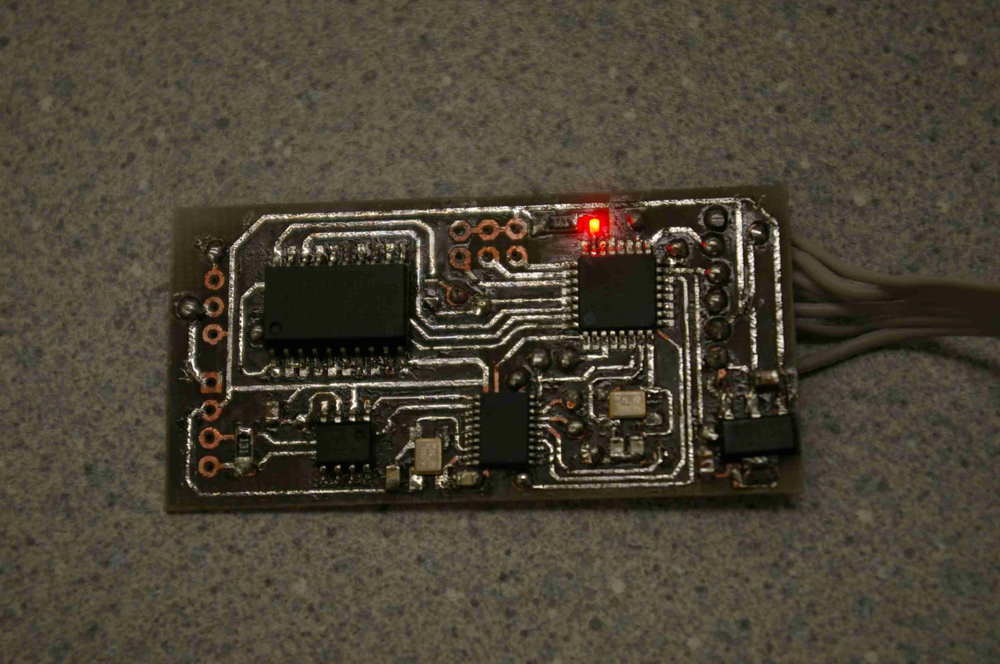
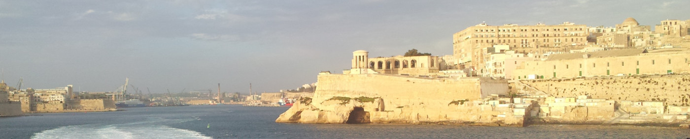
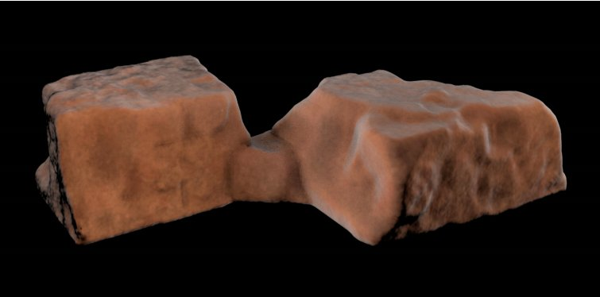
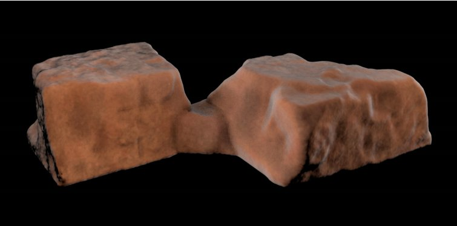
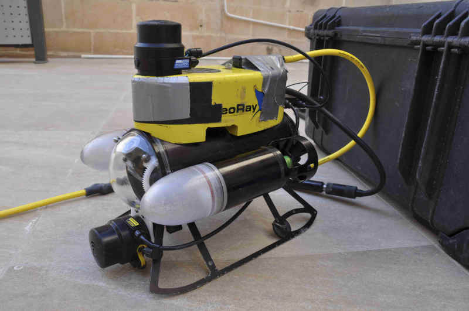
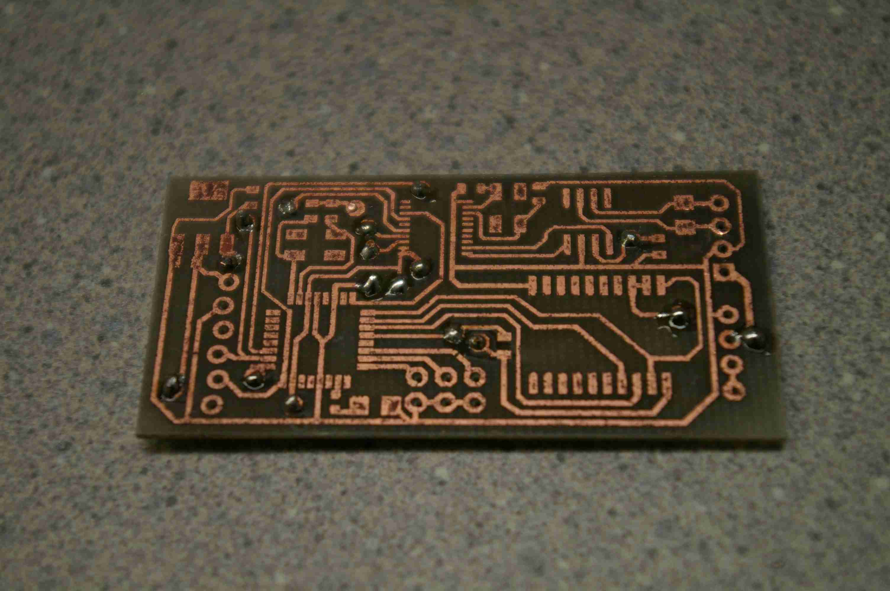
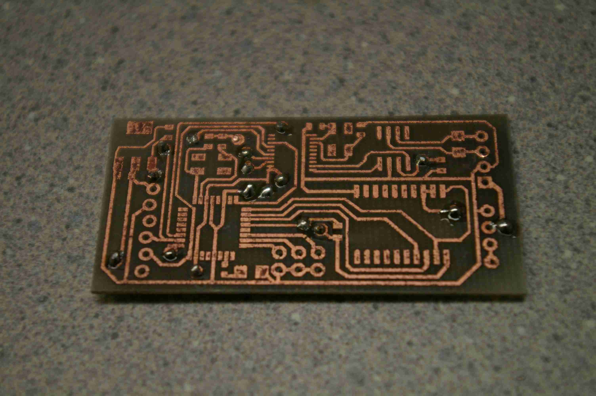

CAN Bus Hardware Device
An Embedded System for non-invasively probing CAN Bus packets and rotating a sonar underwater

Introduction
In fall, 2012, I was admitted to Harvey Mudd College's Lab for Autonomous and Intelligent Robotics, LAIR, in its first year of operation. Through the ICEX program, I began developing additional hardware for the underwater robot platform used on deployments, a Videoray Pro III.
Background
The Malta Cistern Mapping Project
The International Computer Engineering Experience (ICEX) Program is a multi-disciplinary, multi-year project focused on the three-dimensional mapping of ancient archaeological sites.

The country of Malta itself lies just off the coast of Italy. In ancient times, it remained a primary target for invaders, as it's location made it an excellent stepping stone to the neighboring mainland. Consequently, a number of invaders have briefly inhabited the island over the past two-thousand years.
In its most recent years, the ICEX research team has traveled to Malta to reconstruct submerged ancient cisterns, many of which have not been seen for over a thousand years. Archaeologists benefit from a project of this manner as a 3D reconstruction can tell a well-versed archaelogist several features about its users, such as their identity and local time period of inhabitance.
This past year, three fellow classmates, Professor Clark, and I traveled to Malta to collect data from three cisterns over the course of ten days. Overlapping stationary scans were collected within each cistern until we had ensured full coverage of the cistern using the onboard camera.
During the summer, we published Towards Three-Dimensional Mapping without Odometry, a paper describing the Lattice Map algorithm. The algorithm itself performs a least-squares fitting on sequential scans based on a probabilistic scan-matching approach, ultimately generating a three-dimensional map from the raw data.
 

Above, the images depict the raw output of the lattice Map algorithm, and a rendering generated with the Marching Cubes algortihm by collaborators in CalPoly San Luis Obispo.
The Platform of Choice: a Videoray Pro III
To navigate the narrow passageways of the ancient cisterns, we deployed a Videoray Pro III remotely-operated vehicle (ROV). Traditional control involves control through a tethered control box. However, the box also features a computer-control feature through a serial interface. Therefore, our team developed drivers in the Linux-based Robot Operating System (ROS) to handle both user-control of the ROV and data collection from the sonars.
To collect both horizontal and vertical scans, two Tritech Sonars were mounted perpendicular to each other at the front of the robot. In this sense, both horizontal and vertical scans could be collected at a single stationary scan point.
The Hardware Development Goal for the 2014 Deployment
Currently two sonars are used to collect both horizontal and vertical scans at a single scan point. For this reason, scans collected are only sparse representations of the true features of the cistern, and interpolation is required to generate closed three-dimensional maps. To resolve this issue, I have prototyped a rotating sonar mount. This project consists of three main components: mechanical design, featuring waterproof hardware; electronics hardware design, featuring a fabricated circuit board, and a modified software driver to control the additional hardware once mounted on the robot.
The Design
Electronics Hardware Design
Parsing the Robot Communication Protocol
The signal communication between ROV and user control box is handled by a CAN Bus interface, strung through a waterproof tether. This tether also carries power and video signals, as well as communication signals for serial accessories.
The natural location to insert the rotating sonar mount accessory would appear to be through the serial accessory lines on the ROV tether. However, two daisy-chained sonars were implemented on these signals, hogging the majority of the bandwidth and ultimately necessary as a real-time vision-aid for the ROV driver. The remaining solution was to send signals to communicate along the same lines as the ROV's control signals. These signals implement a tight CAN Bus closed-feedback loop between the ROV and the control box.
Probing for an Interface to the Sonar Mount
The CAN Bus interface, at the high-level, can string numerous devices along the same bus. The master can communicate with each of these devices individually through an addressing scheme. Unfortunately, for the ROV, the master was the control box, an expensive system which could not be reprogrammed to accept additional slave devices on the CAN Bus interface between the control box and ROV.
However, after further probing, I discovered that the packet sent from the control box to the ROV to the CAN Bus contained several unused bits; enough, in fact, to devise a protocol for the sonar mount. If the sonar mount could read these bits, then it could respond to the data sent from the controller by rotating the mount by the desired amount.
Due to the nature of the CAN Bus protocol, however, devices that are addressed by the master must acknowledge that they have received the packet. Thus, I could not simply program the sonar mount accessory with the same address as the ROV, or both devices would attempt to acknowledge the same packet, originally intended for just the ROV. The solution? To silently acknowledge the packet of the ROV. This capability is, in fact, possible using the MCP2515 CAN Controller IC. Thus, the schematic for CAN Bus interfacing is as follows:
From left to right, the raw CAN Bus signals are first sent to the MCP2551, which maps the differential voltage signals to TTL logic levels acceptable by several digital ICs. The MCP2515 then parses this packet and stores the data in internal registers. Through an SPI interface, An Atmega328 microcontroller (not shown) then drives a servo, connected to the sonar mount, to the appropriate angle. For brevity, the full schematic is not shown.
A small form-factor PCB

The hardware task was well-defined: develop a hardware interface to probe the CAN Bus communication line without actively replying to CAN messages directed at the robot. Furthermore, due to the small-form-factor of the sonar mount on the outside of the robot, a small pcb was developed to fit inside the waterproof housing. To save time, I opted to etch the control board, rather than send it out.
 

Mechanical Design
O-Ring Sealing
Two openings pose a threat for leaks on the outside of the waterproof housing: the shaft opening, where the sonar rotates, and the case opening, from which the electronics and servo are inserted. To ensure an underwater seal at a depth of 50 ft, I chose two types of o-ring seals: a ring seal for rotating components, and a typical o-ring seal for the lid. The main lid of the box (shown below) is fixed with a typical O-ring seal, where groove depths were calculated with the Parker O-ring Manual.
Designing for Field Wear
Since the box would be repeatedly opened for maintenance and inspection of the circuitry, this particular lid sealing is ideal, as it does not induce severe mechanical wear on the box each time it is opened. Additionally, no screws are threaded into the plastic housing; rather, two bolts apply compressive force from opposing ends of the box.
Software Driver Modification
The ROV is ultimately controlled by a software driver implemented in Python. This driver constructs the data packets sent to the ROV to control speed and direction of both motors. Within this driver, I added additional software control to control the new sonar Mount

Testing
This device is currently in its final stages of testing. A full underwater test will be conducted before December 15th.